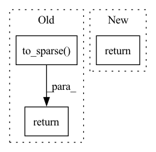

Pattern ID :18165

Before Change
"matrix and replacement-row must share the same column number."
row = row.unsqueeze(0)
if not row.is_sparse:
row = row.to_sparse()
if not row.is_coalesced():
row = row.coalesce()
// delete existing indices we dont want
new_indices = matrix.indices()[
:, matrix.indices()[0, :] != row_index]
new_values = matrix.values()[
matrix.indices()[0, :] != row_index]
replacement_row_indices = torch.stack(
[torch.tensor(row_index, device=matrix.device)]*len(row.values()))
replacement_indices = torch.stack([replacement_row_indices,
row.indices()[1, :]])
new_indices = torch.cat([new_indices, replacement_indices], -1)
new_values = torch.cat([new_values, row.values()], -1)
new_matrix = torch.sparse_coo_tensor(
new_indices, new_values, size=matrix.shape,
dtype=matrix.dtype, device=matrix.device)
return new_matrix
if __name__ == "__main__":
After Change
)
result = torch.sparse.mm(removal_matrix, matrix) \
+ addition_matrix
return result
if __name__ == "__main__":
In pattern: SUPERPATTERN
Frequency: 3
Non-data size: 3
Instances
Fragment ID: 59581141
Project Name: v0lta/pytorch-wavelet-toolbox
Commit Name: ced7891d6e879825d3e5dc0d52e2c7fb08b22440
Time: 2021-09-27
Author: moritz@wolter.tech
File Name: src/ptwt/sparse_math.py
M Class Name: AnonimousClass
N Class Name: AnonimousClass
M Method Name: sparse_replace_row(3)
N Method Name: sparse_replace_row(3)
M Parent Class:
N Parent Class:
M File Name: src/ptwt/sparse_math.py
N File Name: src/ptwt/sparse_math.py
M Start Line: 82
M End Line: 107
N Start Line: 82
N End Line: 105
'>
Before Change
a_full = construct_a(wavelet, length, wrap=False)
a_orth = clip_and_orthogonalize(a_full, wavelet, length)
return a_orth.to_sparse()
def construct_boundary_s(wavelet, length):
Construct a boundary-wavelet filter 1d-synthesis matarix.
After Change
[torch.sparse.FloatTensor]: The analysis matrix.
if boundary == "circular":
return construct_a(wavelet, length, wrap=True, dtype=dtype)
elif boundary == "gramschmidt":
a_full = construct_a(wavelet, length, wrap=False, dtype=dtype)
a_orth = clip_and_orthogonalize(a_full, wavelet)
'>
Fragment ID: 59581140
Project Name: v0lta/pytorch-wavelet-toolbox
Commit Name: d668ef438418877afc8765c85269c8be689510ec
Time: 2021-09-20
Author: moritz.wolter@scai.fraunhofer.de
File Name: src/ptwt/matmul_transform.py
M Class Name: AnonimousClass
N Class Name: AnonimousClass
M Method Name: construct_boundary_a(4)
N Method Name: construct_boundary_a(2)
M Parent Class:
N Parent Class:
M File Name: src/ptwt/matmul_transform.py
N File Name: src/ptwt/matmul_transform.py
M Start Line: 198
M End Line: 210
N Start Line: 203
N End Line: 226
'>
Before Change
strided_matrix = convolution_matrix.to_dense()[strided_rows, :]
return strided_matrix.to_sparse()
After Change
// to_plot = np.concatenate([strided_matrix.to_dense(), strided_matrix_2.to_dense(), diff], 1)
// plt.imshow(to_plot); plt.show()
return strided_matrix
'>
Fragment ID: 59581139
Project Name: v0lta/pytorch-wavelet-toolbox
Commit Name: f659f1a0eacbd03f1438d0c70729ce7e95eb9ea0
Time: 2021-09-13
Author: moritz.wolter@scai.fraunhofer.de
File Name: src/ptwt/matmul_transform_2d.py
M Class Name: AnonimousClass
N Class Name: AnonimousClass
M Method Name: construct_strided_conv2d_matrix(5)
N Method Name: construct_strided_conv2d_matrix(5)
M Parent Class:
N Parent Class:
M File Name: src/ptwt/matmul_transform_2d.py
N File Name: src/ptwt/matmul_transform_2d.py
M Start Line: 80
M End Line: 113
N Start Line: 88
N End Line: 127